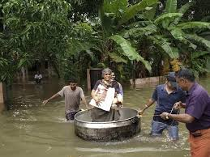

Across India, flooding caused by heavy monsoons rainfall claimed 69,000 lives and left 17 million people without homes over the same period, according to a study he co-authored, published last year in Nature Communications.
In Kerala, all 35 of the state's major reservoirs were brimming with rain water by August 10, forcing local authorities to open the sluice gates on the Idukki Dam for the first time in 26 years
The weather patterns behind these destructive downpours are well understood, even if the fingerprint of global warming is still hard to distinguish from what scientists call "natural variability".
Rapid warming in the Arabian Sea and nearby landmass causes monsoon winds to fluctuate and intensify for short spans of three-to-four days, Koll explained.
During those periods, moisture from the Arabian Sea is dumped inland.
South Asia's 'hotspots'
"Over the last decade, due to climate change, the overheating of landmass leads to the intensification of monsoon rainfalls in central and southern India," said monsoon expert Elena Surovyatkina, a professor at the Russian Academy of Sciences, and a senior scientist at PIK.
The changes observed so far have occurred after an increase in Earth's average surface temperature of only one degree Celsius (1.8 degrees Fahrenheit) above pre-industrial levels.
On current trends, India's average annual temperatures are set to rise 1.5 C to 3 C compared to that benchmark by mid-century, according to a World Bank report entitled "South Asia's Hotspots".
"If no corrective measures are taken, changing rainfall patterns and rising temperatures will cost India 2.8 percent of its GDP and will drag down living standards of half its population by 2050," the World Bank said in a statement.
The 196-nation Paris climate treaty calls for capping global warming at "well below" 2 C (3.6 F), and 1.5 C if possible.
But voluntary national pledges to reduce greenhouse gas emissions, even if respected, would still see temperatures rise at least 3 C.
Flooding is not the only problem India's burgeoning -- and highly vulnerable -- population will face as a consequence of global warming.
If manmade carbon emissions continue unabated, some regions in northeast India could literally become unlivable by the end of the century due to a deadly combination of heat and humidity during heatwaves, recent research has projected.
Indeed, larges swathes of south Asia, including the Ganges-Brahmaputra Basin, could approach the threshold for survivability outdoors
Coastal cities, meanwhile, are especially vulnerable to sea level rise, driven by melting ice sheets and expanding ocean water, on the one hand, and subsidence due to over-development and the depletion of water tables, on the other.
IN MY OPINION IF WE DEVELOP AN APPLICATION TO LOCATE THE NEAREST REFUGEE CAMP AND THE RESCUEE TEAM via LOCATION MAPPING SYSTEM THROUGH GPS IT WOULD BE VERY HELPFULL